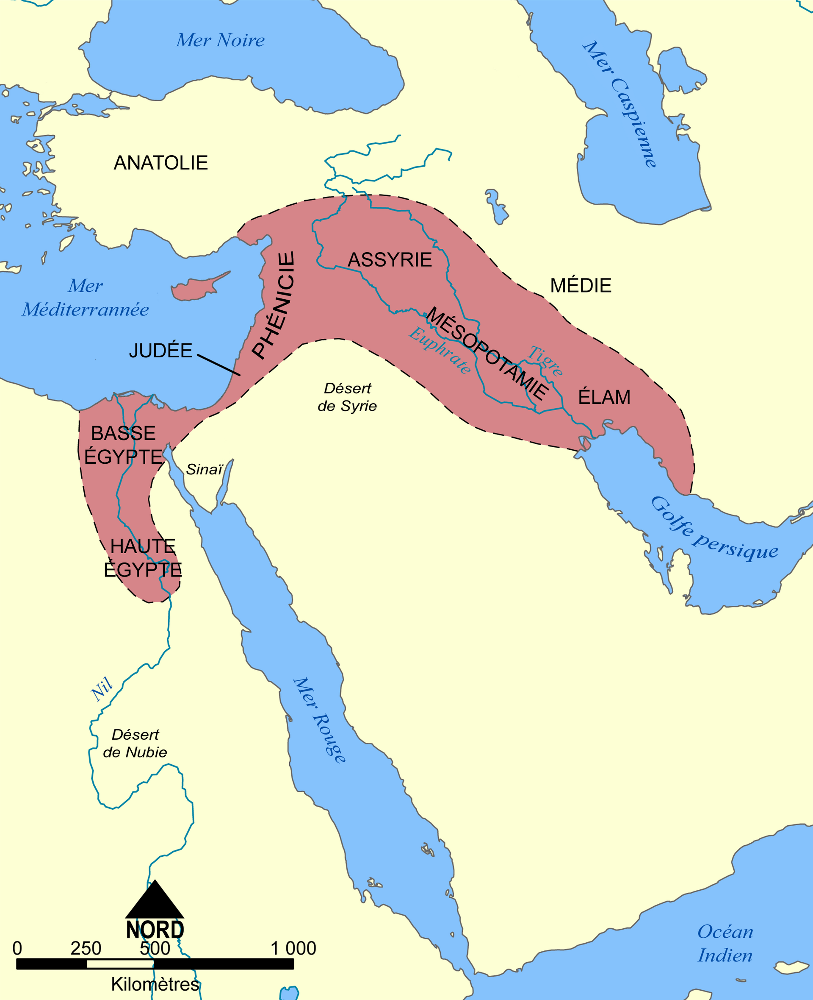
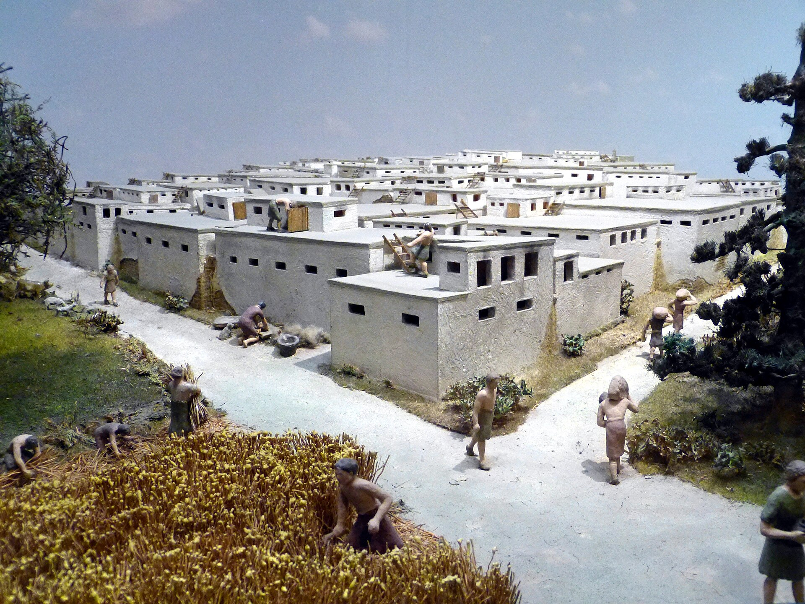
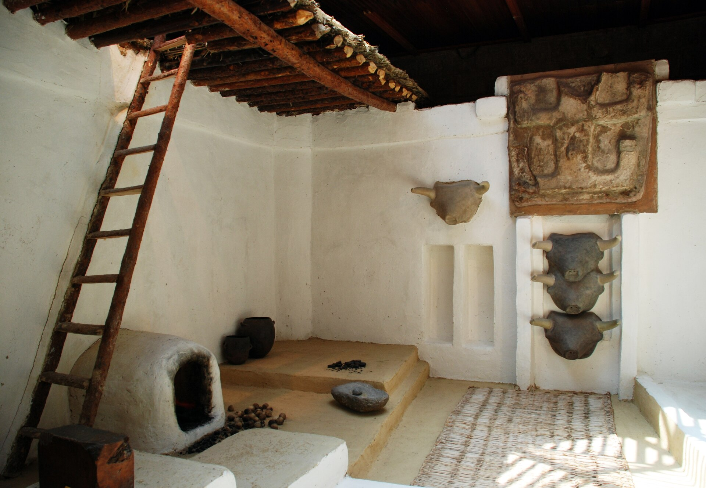
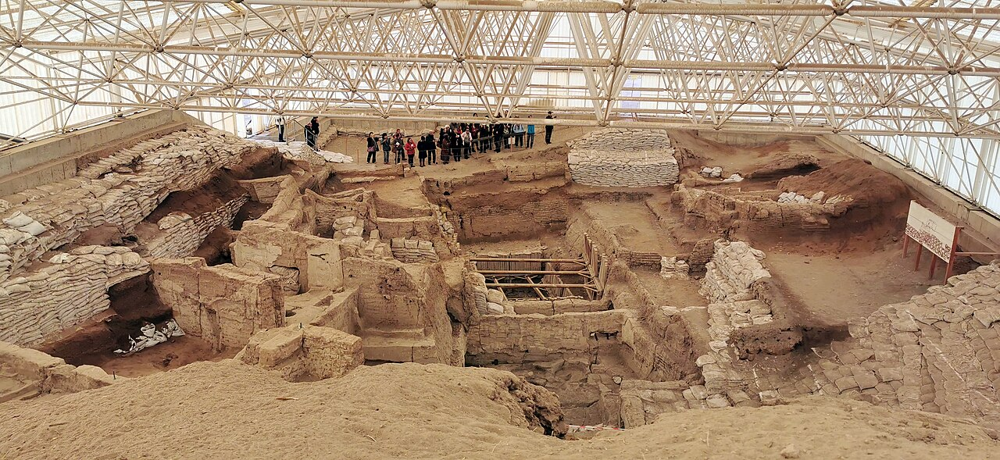
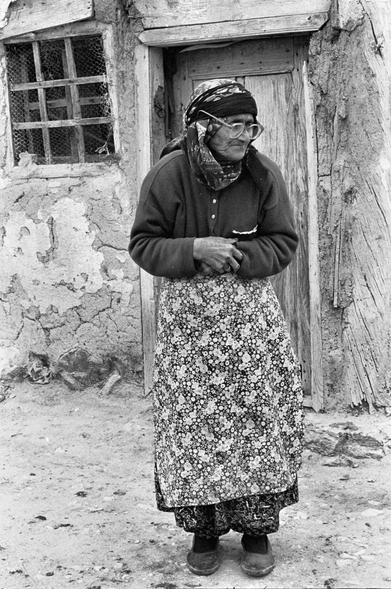
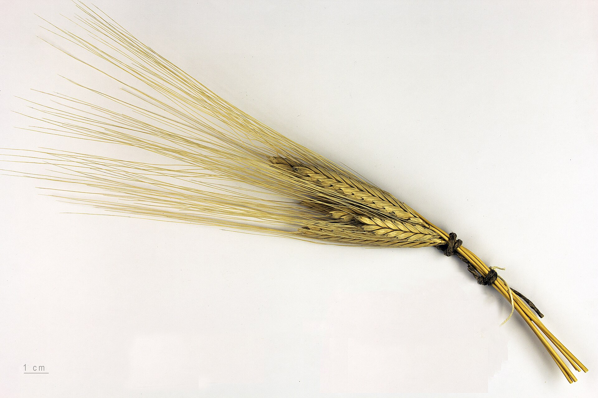
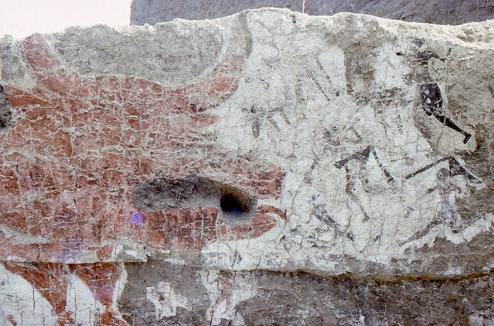

Histoire et éducation à la citoyenneté
La sédentarisation
- Période
- Vers -10 000 à -3500
- Angle d'entrée
- L'organisation sociale et économique
Mise en contexte
La sédentarisation se caractérise par l'établissement fixe d'un regroupement humain sur un territoire et elle est associée à la généralisation de l'agriculture et de l'élevage. Ce processus débute durant la période historique appelée Néolithique et se déroule d'abord au Moyen-Orient, vers le 9e millénaire av. J.-C. Il est étudié sous l'angle de l'organisation sociale et économique.
Le Paléolithique et le Néolithique : deux périodes à distinguer
La préhistoire est divisée en deux périodes bien distinctes :
- Le Paléolithique (-3 000 000 à -10 000)
- Le Néolithique (-10 000 à -3500)
C'est la sédentarisation de l'être humain qui fait la coupure entre ces deux périodes. L'être humain est nomade durant le Paléolithique alors qu'il devient sédentaire et semi-sédentaire au Néolithique.
Le passage du nomadisme au sédentarisme
Au cours du Paléolithique, les êtres humains étaient nomades. Cela signifie qu'ils se déplaçaient constamment à la recherche de nourriture et d'abris naturels. Ils ont vécu de la chasse, de la cueillette et de la pêche. Ils étaient constamment en mouvement pour suivre les troupeaux d'animaux et les saisons.
Les nomades étaient des chasseurs-cueilleurs, ce qui signifie qu'ils chassaient des animaux et cueillaient des plantes sauvages comestibles pour se nourrir. Leur alimentation était composée à 35 % de viande et d'environ 65 % de plantes sauvages, de petits fruits et de racines.
Les nomades étaient des chasseurs compétents et utilisaient des outils en pierre pour fabriquer des armes, comme des lances et des arcs, pour traquer les animaux. Ils se regroupaient en petites communautés, composées de quelques familles qui se déplaçaient fréquemment pour trouver de nouvelles ressources.
Leur vie était difficile. Les nomades devaient faire face aux éléments naturels, aux prédateurs et aux maladies. Ils prenaient aussi soin les uns des autres. Cependant, ils s'adaptaient à leur environnement et savaient comment utiliser les ressources disponibles pour survivre. Ils construisaient des abris temporaires, comme des tentes en peau d'animaux.
La sédentarisation au Néolithique
À la fin de la dernière glaciation, vers 10 000 ans avant notre ère, le climat de la Terre s'est réchauffé progressivement. Les immenses glaciers qui recouvraient une grande partie de l'Amérique du Nord, de l'Europe et de l'Asie ont commencé à fondre, libérant de nouvelles terres fertiles. Ce changement climatique a transformé les paysages et favorisé l'apparition de nouvelles plantes et de nouveaux animaux. Devant l'abondance des ressources, certains groupes humains ont cessé de se déplacer constamment à la recherche de nourriture : ils ont commencé à se sédentariser. Cette sédentarisation a marqué une étape majeure, puisqu'elle a mené à l'invention de l'agriculture, à l'élevage et à la création des premiers villages permanents.
L'agriculture a ainsi permis aux êtres humains de cultiver leurs propres aliments (céréales, légumineuses, légumes, etc.), ce qui a réduit leur dépendance à la chasse et à la cueillette. L'élevage d'animaux leur a également fourni une source régulière de nourriture. En s'installant dans des endroits fixes, les êtres humains ont pu construire des villages permanents, développer des outils et réfléchir à une organisation complexe de leur communauté.
Les premiers foyers de sédentarisation
La fin de la période glaciaire
Il y a environ 10 000 ans, la planète sortait d'une période de glaciation, au cours de laquelle de grandes parties de l'hémisphère nord étaient recouvertes de glace. L'une des conséquences de la fin de cette période glaciaire a été la sédentarisation de certains groupes humains, notamment dans la région du Croissant fertile. Avec le recul et la fonte des glaciers, le climat est devenu plus chaud et plus sec. Les vastes étendues de terres sont devenues des plaines fertiles propices à l'agriculture. Les humains ont ainsi commencé à cultiver des céréales, telles que le blé et l'orge, ainsi que des légumes et des fruits. Ils ont également commencé à domestiquer des animaux, tels que les moutons, les chèvres et les bovins. Cela leur a permis d'avoir un approvisionnement régulier en viande, en lait et en autres produits d'origine animale tels que le cuir.
Cette région de la planète fut, à la fin de la dernière glaciation, propice à l'agriculture, car on y retrouve d'importants fleuves (le Tigre, l'Euphrate ainsi que le Nil). Grâce aux sédiments apportés par les crues printanières, le sol produit énormément de denrées alimentaires.
Le Croissant fertile
Le Croissant fertile est une région située au Moyen-Orient, qui s'étend de la vallée du Nil en Égypte jusqu'au golfe Persique. Le Nil, le Tigre et l'Euphrate ont favorisé la sédentarisation des êtres humains, apportant les sédiments nécessaires à la fertilité des sols.

La présence de métaux influence-t-elle le choix des premiers sites?
Les premières agglomérations sont établies près de l'eau et de sources de matériaux.
- Vers 8000 avant notre ère, Jéricho profite des salines (gisements de sel) de la mer Morte et du mont Sodome.
- Vers 7000 avant notre ère, Çatal Höyük est occupée en Anatolie, à proximité d'un volcan riche en obsidienne (lave vitrifiée qui donne des éclats très coupants et les premiers miroirs).
Progressivement, les premières puissances se dessinent, apprivoisant le traitement des roches et devenant exportatrices de produits précieux. Dans les plaines, des cités s'établissent près des fleuves, des lacs, dans les marais de la Mésopotamie ou dans la vallée du Nil, en Égypte. Ce sont les civilisations de l'argile, peuplées de potiers qui dépendent souvent d'importations lointaines pour leurs besoins minéraux.

Les premiers villages
Les villages néolithiques de Mureybet, de Mallaha et de Çatal Höyük sont des sites archéologiques importants qui nous permettent de mieux comprendre la vie des premières communautés humaines sédentaires. Ces villages, situés dans le Croissant fertile, ont été habités il y a plusieurs milliers d'années.
Mureybet
Mureybet était un village situé dans la vallée de l'Euphrate, dans ce qui est aujourd'hui la Syrie. Il a été occupé entre -10 200 et -8500. Les fouilles archéologiques ont révélé que les habitants de Mureybet pratiquaient l'agriculture et l'élevage, cultivant des céréales comme le blé et l'orge et élevant des animaux comme les moutons et les chèvres. À Mureybet, les maisons commencent à se faire rectangulaires et on trouve des outils témoignant de la présence d'agriculture.
Mallaha
À Mallaha, ou Ain Mallaha, on retrouve des vestiges d'habitations creusées dans le sol et des murs de pierre. On y retrouve également plusieurs outils en pierre et en os, un foyer et des meules de pierre. Grâce aux archéologues, nous avons aussi appris que ses habitants chassaient la gazelle et d'autres petits gibiers. Par contre, les céréales (blé, orge, etc.) ne semblaient pas faire partie de leur alimentation.
Le village aurait été occupé de -10 000 à -8500, dans l'Israël actuel.
Çatal Höyük
Çatal Höyük était un village situé en Anatolie, dans ce qui est aujourd'hui la Turquie. Il a été occupé entre 7400 et 5700 avant notre ère. Les fouilles archéologiques ont révélé que Çatal Höyük avait une communauté très développée, avec des maisons en brique crue qui étaient construites les unes sur les autres. Ce village est l'un des plus importants du Néolithique.

Le village était protégé à l'aide d'une muraille de pierre afin de conserver le bétail et leur récolte. De cette manière, il devenait difficile pour les villages avoisinants de mettre la main sur leurs réserves de nourriture. Dans ce village, on entrait dans les maisons grâce à des ouvertures sur les toits. Le petit bétail (porcs, moutons, chèvres, etc.) était conservé dans des cours intérieures. Le village aurait eu une population d'environ 7000 habitants. De plus, il n'y avait aucune rue. Les maisons de forme rectangulaire étaient collées les unes aux autres. Leurs murs étaient peints de fresques (peintures et gravures) qui nous montrent aujourd'hui les animaux qui étaient chassés à l'époque. Finalement, la déesse-mère était souvent peinte pour attirer la fécondité.


La domestication des animaux
L'un de ces changements qui s'est produit lors du Néolithique a été la domestication des animaux. Dans la région du Croissant fertile, qui comprend des parties de l'Iran, de l'Irak, de la Syrie et de la Turquie, la domestication des animaux a joué un rôle important dans le développement des premières sociétés agricoles.
La domestication des animaux a commencé par la sélection et la reproduction contrôlée d'espèces sauvages, afin de créer des animaux domestiques qui répondaient aux besoins des humains. Les premiers animaux domestiqués étaient des chiens, des moutons, des chèvres et des bovins. Ces animaux étaient choisis pour leurs spécificités, comme la capacité à être dressés, à produire du lait ou de la viande ou à fournir de la laine ou du cuir pour se vêtir.

Cette domestication a de nombreux avantages pour les communautés néolithiques du Croissant fertile. Tout d'abord, elle a permis aux humains de contrôler leur accès à de la nourriture. En effet, les animaux domestiques fournissaient une source régulière de viande, de lait et d'œufs aux habitants des villages. Cela a permis aux communautés de se sédentariser et de se concentrer sur des activités comme l'agriculture.
De plus, les animaux domestiques étaient utilisés pour le travail. Par exemple, les bœufs étaient utilisés pour labourer les champs, tandis que les ânes étaient utilisés pour le transport de marchandises. Cela a permis d'augmenter la productivité agricole et de faciliter le commerce avec d'autres communautés.
La domestication des végétaux
Les premières plantes cultivées dans le Croissant fertile sont des céréales et des légumineuses : le blé, l'orge, le pois et la lentille. En sélectionnant et en ressemant les graines des meilleurs plants, les agriculteurs du Néolithique transforment peu à peu les espèces sauvages en espèces cultivées.

Maîtriser l'agriculture
Au Néolithique, les êtres humains ont commencé à maîtriser l'agriculture, ce qui a marqué un tournant dans leur mode de vie. Ils sont passés de la cueillette et de la chasse à la culture des plantes et à l'élevage des animaux.
Pour faciliter ce travail de la terre, les premiers outils agricoles ont été créés. Ces outils étaient souvent fabriqués à partir de pierres polies, d'os ou de bois. Ils ont permis aux humains de mieux contrôler leur environnement et de produire plus de nourriture, ce qui a conduit à la formation de villages permanents. Parmi ces outils essentiels, on retrouve la faucille, la houe, ainsi que la meule et la molette.
La faucille
Composée d'une lame en pierre ou en os fixée à un manche en bois, la faucille servait à couper les tiges des plantes cultivées, comme le blé ou l'orge. Grâce à cet outil, les agriculteurs pouvaient récolter de plus grandes quantités de céréales plus rapidement, facilitant ainsi le stockage et la consommation de la nourriture tout au long de l'année.
python outils\images.pyLa houe
La houe était un outil agricole destiné à préparer les champs avant la plantation des graines. Dotée d'une lame en pierre ou en bois fixée à un manche, elle permettait de retourner et d'ameublir la terre, favorisant la bonne croissance des plantes. Elle jouait aussi un rôle important pour désherber les cultures, garantissant ainsi un meilleur rendement des champs en limitant la concurrence entre les plantes cultivées et les mauvaises herbes.

La meule et la molette
La meule et la molette étaient utilisées ensemble pour moudre les grains de céréales en farine. La meule, une grande pierre plate, servait de base. La molette, une petite pierre ronde, était frottée contre la meule pour écraser les grains. Ce processus de mouture était essentiel pour transformer les céréales en aliments comestibles, comme le pain ou les galettes, rendant ainsi les produits cultivés plus faciles à consommer et à conserver.

La division du travail
Des surplus alimentaires
Alors que dans les sociétés de chasseurs-cueilleurs, chaque membre de la communauté était impliqué dans la recherche de nourriture et dans la fabrication d'outils, au Néolithique, certaines personnes se sont consacrées à l'agriculture et à l'élevage. Grâce à cela, les premiers regroupements humains ont pu dégager des surplus agricoles.
Une des conséquences les plus importantes de la production de surplus alimentaires a été la spécialisation des individus dans différents domaines. Les membres de la communauté qui ne se vouaient pas à la production de nourriture se tournèrent ainsi vers l'artisanat.
L'artisan
Les objets fabriqués par les artisans sont variés. Ils peuvent être utilisés pour l'agriculture, la cuisson, la chasse, la décoration, etc. Certains artisans vont se spécialiser dans un domaine précis afin de développer une expertise. Par exemple, le potier fabrique des pots et d'autres récipients, le forgeron fabrique des outils et des armes faites de métal, le vannier fabrique des paniers tressés à l'aide de fibres végétales et le tisserand fabrique des tapis et des vêtements.
L'avènement de la poterie est un événement particulièrement important pour les premiers villages. Les pots et autres récipients sont utiles pour la cuisson de la nourriture et pour l'entreposage des surplus agricoles.
python outils\images.pyLa hiérarchie sociale
La division des tâches a également entraîné une hiérarchie sociale plus complexe. Alors que dans les sociétés de chasseurs-cueilleurs, les décisions étaient souvent prises de manière collective, au Néolithique, certaines personnes sont devenues des chefs ou des dirigeants, chargés de prendre des décisions pour l'ensemble de la communauté. Cela a créé une structure sociale plus organisée, avec des individus ayant différents niveaux de pouvoir et de responsabilités.
python outils\images.pyL'apparition des premiers échanges
Les objets fabriqués par les artisans sont utilisés par les habitants du village ou sont échangés contre d'autres objets provenant d'un autre village. En effet, afin de répondre à tous les besoins des habitants, un réseau d'échanges se crée entre les différents villages du Néolithique. Pour faciliter les échanges, un nouveau métier voit le jour, celui de commerçant. Ce dernier est l'intermédiaire entre ceux qui échangent des produits. Par exemple, il peut échanger des paniers fabriqués par le vannier contre des produits alimentaires provenant d'un autre village. Ce type d'échange est appelé le troc.
Les rites funéraires et les croyances
Les fouilles menées à Çatal Höyük ont révélé que les habitants accordaient une grande importance à la mort et aux pratiques funéraires. Les morts étaient enterrés à l'intérieur des maisons, sous le sol. Les défunts étaient souvent accompagnés d'objets personnels tels que des bijoux ou des outils. Cette pratique suggère une croyance en une vie après la mort et en la nécessité d'emporter des possessions matérielles avec soi. Plusieurs archéologues proposent l'hypothèse que la valeur des objets retrouvés à proximité des ossements détermine la classe sociale du défunt.
Les peintures murales découvertes dans les maisons de Çatal Höyük fournissent également des informations sur les croyances religieuses de l'époque. Ces peintures représentent souvent des divinités telles que des déesses-mères, des animaux sacrés et des symboles de fertilité.

Les déesses-mères étaient vénérées dans de nombreuses cultures néolithiques à travers le monde. Elles étaient souvent représentées sous la forme de statues ou de figurines féminines aux formes généreuses, symbolisant la fertilité et la maternité. Ces représentations étaient souvent associées à des rituels de fécondité et de fertilité, visant à assurer des récoltes abondantes et des naissances saines.
Les déesses-mères étaient considérées comme les gardiennes de la vie et de la continuité de la communauté. Elles étaient perçues comme les protectrices des familles, des femmes enceintes et des enfants. Leur rôle était également étroitement lié à la préservation de l'équilibre naturel et de l'harmonie entre l'humanité et la nature. En tant que symboles de fertilité, les déesses-mères étaient vénérées dans l'espoir d'assurer la prospérité et la survie de la communauté.